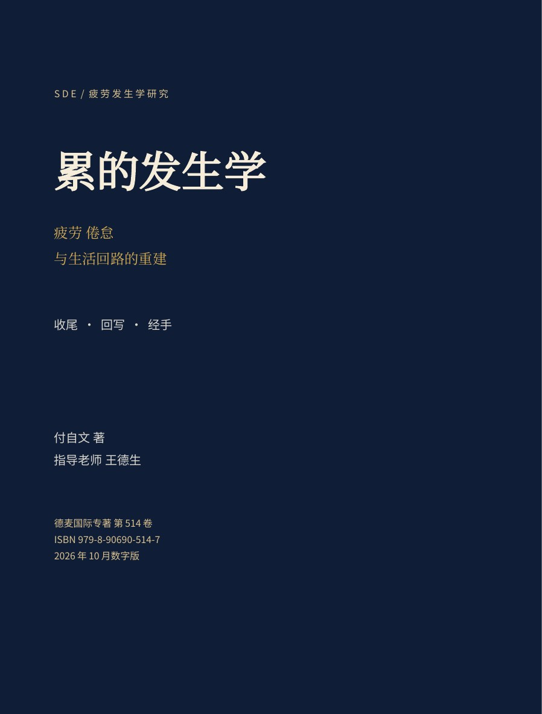

01 / READ
阅读
保留220与302号专著的墨蓝暖金风格。翻页读全书，也可逐章阅读、直接回到问题所在。
打开翻页书 →
01 / READ
保留220与302号专著的墨蓝暖金风格。翻页读全书，也可逐章阅读、直接回到问题所在。
打开翻页书 →02 / LEARN
60章各有独立问题、自检与迁移练习。先留下自己的理解，再阅读、讨论与修订；可自由跳读和停止。
进入60章学习 →03 / DIALOGUE
带着本章原文读懂、用上、拆开、对撞、写出。留出反对的余地，也留出不把休息变成任务的余地。
与本书智能体对话 →ISBN 979-8-90690-514-7 | 2026年10月数字版 v1.0
ISBN按本站既有号段规则分配，并经站内查重和校验位核对；此处未提供外部登记机关的核验记录。正文汉字数不含标题、目录、书前文字、附录与参考文献。
本书提出可讨论、可检验的发生学解释。构造场景与待实施研究均不作为实证结论；配套学习设计和智能体回复也不代表作者、指导老师的实际发言或专业诊断。